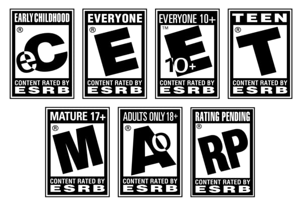

A first line of defense:
The Entertainment Software Rating Board (ESRB) assigns age and content ratings for video games and mobile apps that enforces guidelines for the industry. Video game companies are required by law to list the rating along with specificities regarding the content. Similar to how movies are rated, parents can use this rating system to understand how explicit the content their children are being exposed to before purchasing a game.
- eC-Early Childhood
- Content is intended for young children. Usually for educational games and have a childlike feel.
- E-Everyone
- Content is generally suitable for EVERYONE! This rating contains minimal cartoon violence, fantasy, and infrequent use of mild language.
- E10+-Everyone 10+
- This is essentially the same as the Everyone rating yet the mild violence and mild language increases in frequency and it will have minimal suggestive themes.
- T-Teen
- Content is suitable for ages 13 and up. This content could contain violence, suggestive themes, crude humor, minimal blood, simulated gambling and/or frequent use of string language.
- M-Mature
- Content is generally suited for ages 17 and up. Games in this category will contain intense violence, blood and gore, sexual content and/or strong language.
- AO-Adults Only
- This rating is suitable for 18 years of age and older. This rating could contain prolonged scenes of intense violence, graphic sexual content and /or gambling with real currency.
- RP-Rating Pending
- This rating is reserved for marketing purposes and will usually only be seen on videogame trailers.